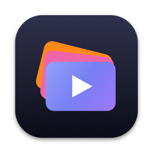

Privacy policy
ChannelDeck · last updated November 13, 2026
ChannelDeck is a desktop app that runs entirely on your own Mac. This policy explains what it does with your information. In short: your data stays on your Mac, and the app only sends it to YouTube and Twitch to do what you ask.
Use of YouTube API Services
ChannelDeck uses the YouTube API Services to upload videos, schedule them, add them to playlists, set thumbnails and read their status for the channels you connect. By using ChannelDeck with YouTube you agree to the YouTube Terms of Service. Google's handling of your information is described in the Google Privacy Policy.
What ChannelDeck accesses
- Your YouTube channels, when you sign in with Google: channel name, handle and picture, your categories and playlists, and the videos ChannelDeck uploads for you, including their status.
- Your Twitch channels, when you sign in with Twitch: channel name and picture, and the channel's clips and their download links.
- Files you choose: the videos and thumbnails you add to posts, and the clips ChannelDeck downloads into your clip folder.
Where it is stored
Everything is stored only on your Mac: in a database in
~/Library/Application Support/ChannelDeck, in your clip folder, and in logs in
~/Library/Logs/ChannelDeck. Sign-in tokens are encrypted with the macOS
Keychain and are never written to logs or backups.
What is shared, and with whom
ChannelDeck has no server. It does not collect analytics, does not track you, and does not send your information to the developer or to anyone else. It sends data only to Google (YouTube) and Twitch, directly from your Mac, to carry out the actions you take in the app, such as uploading a video or syncing clips.
Removing access and deleting data
- Removing a channel in ChannelDeck revokes its access. You can also remove access at any time from your Google Account permissions page, or from Twitch connections.
-
To delete everything ChannelDeck stored, quit the app and delete
~/Library/Application Support/ChannelDeck, your clip folder and~/Library/Logs/ChannelDeck.
Changes and contact
If this policy changes, the new version is posted on this page with a new date. Questions: open an issue on GitHub.